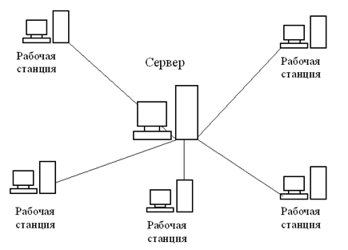
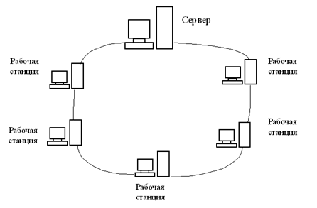
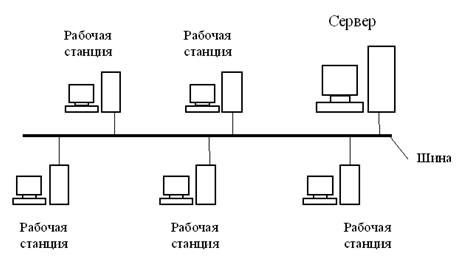

ЛЕКЦИЯ №24-26. (6часов)
ТЕМА: «КОМПЬЮТЕРНЫЕ СЕТИ»
Рассматриваемые вопросы:
1. Компьютерные сети, их структура, способы и средства организации функционирования.
2. Типология локальных компьютерных сетей. Типы локальных сетей.
3. Глобальная компьютерная сеть. Интернет.
Ход лекции:
1.Компьютерные сети, их структура, способы и средства организации функционирования
Электронно-вычислительная сеть (или просто компьютерная сеть) – это совместное подключение нескольких отдельных компьютеров к единому каналу передачи данных.
Основное назначение вычислительной сети состоит в совместном использовании ресурсов и осуществление быстрой связи как внутри организации, так и за ее пределами.
Рассмотрим основные понятия, которые используются в вычислительных сетях.
Клиент – компьютер, подключенный к вычислительной сети.
Сервер (server) – компьютер, предоставляющий свои ресурсы клиентам сети.
Различают следующие виды серверов:
Среда - способ соединения компьютеров.
Ресурсы – диски, файлы, принтеры, модемы и другие элементы, используемые при работе в сети.
В зависимости от размера все электронно-вычислительные сети делятся на:
Во многих организациях, в которых эксплуатируются персональные компьютеры, создаются локальные вычислительные сети. Это делается потому, что ЛВС предоставляет ряд значительных преимуществ, по сравнению с использованием отдельных компьютеров. Рассмотрим эти преимущества.
Разделение ресурсов – позволяет экономно использовать ресурсы в информационной системе. Например, производить печать со всех компьютеров на одном принтере, использовать один дисковод DVD и т.д.
Разделение данных – позволяет иметь доступ с разных рабочих мест к файлам, которые расположены на других компьютерах. Благодаря разделению данных можно организовать работу нескольких пользователей по созданию общего документа.
Разделение программных средств - позволяет пользователям использовать программы, установленные на других компьютерах.
2. Типология локальных компьютерных сетей. Типы локальных сетей
Под топологией вычислительной сети понимается способ соединения ее отдельных компонентов (компьютеров, серверов, принтеров и т.д.). Различают три основные топологии:
При использовании топологии типа звезда информация между клиентами сети передается через единый центральный узел. В качестве центрального узла может выступать сервер или специальное устройство - концентратор (Hub).

Преимущества данной топологии состоят в следующем:
Однако помимо достоинств у данной топологии есть и недостатки:
При топологии типа кольцо все компьютеры подключаются к линии, замкнутой в кольцо. Сигналы передаются по кольцу в одном направлении и проходят через каждый компьютер.

Передача информации в такой сети происходит следующим образом. Маркер (специальный сигнал) последовательно, от одного компьютера к другому, передается до тех пор, пока его не получит тот, которому требуется передать данные. Получив маркер, компьютер создает так называемый "пакет", в который помещает адрес получателя и данные, а затем отправляет этот пакет по кольцу. Данные проходят через каждый компьютер, пока не окажутся у того, чей адрес совпадает с адресом получателя.
После этого принимающий компьютер посылает источнику информации подтверждение факта получения данных. Получив подтверждение, передающий компьютер создает новый маркер и возвращает его в сеть.
Преимущества топологии типа кольцо состоят в следующем:
К недостаткам данной топологии относятся:
При топологии типа общая шина все клиенты подключены к общему каналу передачи данных. При этом они могут непосредственно вступать в контакт с любым компьютером, имеющимся в сети.

Передача информации в данной сети происходит следующим образом. Данные в виде электрических сигналов передаются всем компьютерам сети. Однако информацию принимает только тот компьютер, адрес которого соответствует адресу получателя. Причем в каждый момент времени только один компьютер может вести передачу данных.
Преимущества топологии общая шина:
К недостаткам топологии типа общая шина относятся:
Самым распространенным типом сети с топологией общая шина является сеть стандарта Ethernet со скоростью передачи информации 10 - 100 Мбит/сек.
Мы рассмотрели основные топологии ЛВС. Однако на практике при создании ЛВС организации могут одновременно использоваться сочетание нескольких топологий. Например, компьютеры в одном отделе могут быть соединены по схеме звезда, а в другом отделе по схеме общая шина, и между этими отделами проложена линия для связи.
Типы локальных сетей
Существует две модели локальных вычислительных сетей:
Данные модели определяют взаимодействие компьютеров в локальной вычислительной сети. В одноранговой сети все компьютеры равноправны между собой. При этом вся информация в системе распределена между отдельными компьютерами. Любой пользователь может разрешить или запретить доступ к данным, которые хранятся на его компьютере.
В одноранговой сети пользователю, работающему за любым компьютером доступны ресурсы всех других компьютеров сети. Например, сидя за одним компьютером, можно редактировать файлы, расположенные на другом компьютере, печатать их на принтере, подключенном к третьему, запускать программы на четвертом.
К достоинствам такой модели организации сети относится простота реализации и экономия материальных средств, так как нет необходимости приобретать дорогой сервер. Несмотря на простоту реализации, данная модель имеет ряд недостатков:
Одноранговую модель сети можно рекомендовать для небольших организациях при числе компьютеров до 20 шт.
В сетях типа клиент-сервер имеется один (или несколько) главных компьютеров - серверов. Серверы используются для хранения всей информации в сети, а также для ее обработки. В качестве достоинств такой модели следует выделить:
Однако у данной модели есть и недостатки. Главный недостаток заключается в том, что стоимость создания сети типа клиент-сервер значительной выше, за счет необходимости приобретать специальный сервер. Также к недостаткам можно отнести и наличие дополнительной потребности в обслуживающем персонале - администраторе сети.
3.Глобальная компьютерная сеть. Интернет
Внешне Интернет похож на телефонную или телеграфную сеть. Однако способ соединения несколько иной.
При звонке по телефону, аппарат прямым проводом соединяется со станцией, станция присоединяет провод идущий к другой станции, а та в свою очередь подключает провод идущий к телефону, которому был адресован звонок. Получается жесткое физическое соединение двух именованных точек (например, А и Б) в пространстве. Его главное неудобство – ваш телефон привязан к розетке. Если вы возьмете свой аппарат и включите в розетку на другом проводе, к вам никто не сможет дозвониться, т.к. другая розетка – это уже не точка A (а С, например).
В чем же отличается от этого передача сообщений по сети Интернет, ведь компьютер сначала тоже соединяется со станцией?
Посылаемое в Интернет сообщение кодируется компьютером в серию электрических сигналов и помечается специальными кодами получателя и отправителя, в итоге формируется как бы электронное письмо (пакет) с прямым и обратным адресом. С компьютера письмо поступает на сервер, сервер сверяет адрес получателя со специальной адресной таблицей и, определив ближайший к нему сервер по пути в нужную сторону, посылает письмо туда. Эта процедура повторяется до тех пор, пока пакет не достигнет адресата. Компьютеры получателя и отправителя физически могут находиться где угодно. В сети Интернет они определяются IP-адресами.
Поэтому Интернет не соединяет абонентов сплошным электрическим проводом, он кодирует сообщения в пакеты и передает их от станции к станции. Такой способ соединения называется логическим. Он конечно медленнее, чем физический способ соединения при передаче телефонного сигнала, но все равно пакет доходит в другую точку мира за доли секунды. Ответ приходит таким же образом, и мы общаемся, не замечая задержки.
У логического способа связи есть неоспоримые преимущества. Например, маршрут письма может пройти по любым соединениям, которые оказались свободны. Например, если на какой-то линии произошла неполадка или сильная загрузка сети, то два абонента живущие на одном континенте могут общаться через другой, не подозревая об этом. Больше того, пакет может уйти через Австралию, ответ прийти через Африку, а следующее письмо отправиться любой третьим путем.
В настоящее время в сети Internet используются практически все известные линии связи от низкоскоростных телефонных линий до высокоскоростных цифровых спутниковых и оптоволоконных каналов. Операционные системы, используемые в сети Internet, также отличаются разнообразием. Большинство компьютеров сети Internet работают под ОС семейства Unix.
Фактически Internet состоит из множества локальных и глобальных сетей, принадлежащим различным компаниям и предприятиям, связанных между собой различными линиями связи. Internet можно представить себе в виде мозаики сложенной из небольших сетей различной величины, которые активно взаимодействуют между собой, пересылая файлы, сообщения и т.п.
В настоящее время Интернет является глобальной вычислительной сетью, задача которого, как и любой другой вычислительной сети, - это передача данных от одного компьютера к другому.
Главное свойство Internet состоит в том, что если в сеть подключается новый абонент, то ему становится доступна информация всей сети. И, наоборот, всем остальным абонентам Internet становится доступна информация и ресурсы его компьютера.
Особенность сети Internet заключается в том, что фактически Internet, как глобальная мировая компьютерная сеть, не имеет своего владельца, т.е. она ни кому не принадлежит. Хотя отдельные вычислительные сети, которые подключены к Internet, имеют своих конкретных владельцев.
Internet основывается на идее существования множества независимых сетей произвольной архитектуры. Это возможно благодаря применению, так называемого, принципа открытости сетевой архитектуры. Он заключается в том, что Internet не предъявляет каких-либо специфических требований к подключаемым компьютерным сетям. Потребитель сам определяет вид собственной сети и метод ее технической реализации. Т.е. он может выбрать любую конфигурацию сети и любое программное обеспечение. Благодаря этому, практически все сети, которые функционируют в мире, можно свободно подключать к Internet.